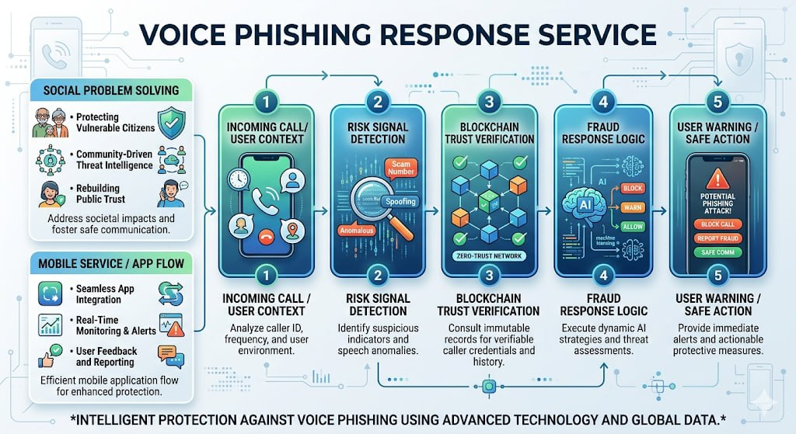

Overview / 개요
이 프로젝트는 당시 사회적으로 문제였던 보이스피싱을 배경으로 진행한 팀 프로젝트다. 동시에 블록체인을 직접 사용해보고 싶었던 관심도 함께 반영되어, 사회 문제 해결 아이디어와 새로운 기술 적용을 연결하는 방향으로 진행됐다.
핵심은 아이디어 수준에서 끝나는 것이 아니라, 실제 서비스 또는 앱 형태로 구현해보는 데 있었다.
보이스피싱이라는 사회 문제를 배경으로, 블록체인을 활용한 서비스/앱 구현을 시도한 협업형 팀 프로젝트.
이 프로젝트는 당시 사회적으로 문제였던 보이스피싱을 배경으로 진행한 팀 프로젝트다. 동시에 블록체인을 직접 사용해보고 싶었던 관심도 함께 반영되어, 사회 문제 해결 아이디어와 새로운 기술 적용을 연결하는 방향으로 진행됐다.
핵심은 아이디어 수준에서 끝나는 것이 아니라, 실제 서비스 또는 앱 형태로 구현해보는 데 있었다.

위험 신호 감지부터 신뢰 검증과 사용자 경고까지 이어지는 서비스 흐름을 요약한 구성도.
이 프로젝트를 만든 이유는 블록체인을 직접 사용해보고 싶었기 때문이다. 동시에 당시 보이스피싱 문제가 사회적으로 크게 부각되고 있었기 때문에, 단순히 기술을 써보는 것에서 끝나는 것이 아니라 실제 사회 문제와 연결된 주제로 프로젝트를 진행해보고 싶었다.
이 프로젝트에서 나는 기획과 기능 구현을 맡았다. 즉 프로젝트 방향을 잡는 일과 실제로 동작하는 결과물로 이어지게 만드는 구현 작업을 함께 담당했다.
이 프로젝트는 협업형 프로젝트로 소개하는 것이 가장 잘 맞는다. 동시에 보이스피싱이라는 사회 문제를 기술적으로 다뤄보려 했고, 블록체인을 실제 구현에 연결해본 프로젝트라는 점도 함께 보여주고 싶다.